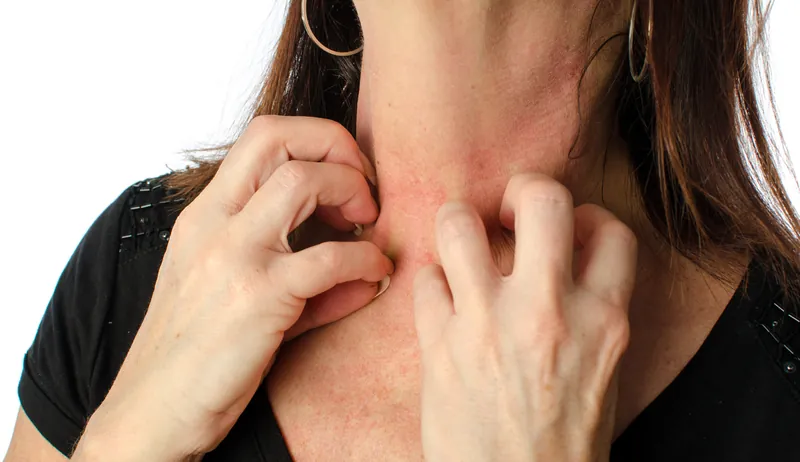

ENT, allergies & skin
I support children, teenagers and adults with ENT, respiratory, asthma, allergy and skin problems. Structured follow-up to breathe more freely, soothe the skin and regain lasting stability.
When symptoms become recurrent…
Ear infections, sinusitis, eczema, allergies, asthma… Patients often tell me they have tried everything, but the problems always come back. Or sometimes, the eczema clears and then asthma or hay fever begins…
These problems quickly become chronic: they tire the body, disturb nights and wear down the whole family’s patience. My role is to understand what the body is expressing and to offer structured follow-up, so that you regain more stability and comfort in daily life.

Skin that itches, burns or is endlessly irritated
The skin often reflects a deeper imbalance. When symptoms keep returning, they affect sleep, self-confidence and social life.
- Eczema: red patches, itching, cracked skin, sleep disturbed by scratching.
- Psoriasis: thick plaques, dryness, constant discomfort, self-consciousness.
- Hives: red bumps, sudden itching, unpredictable flare-ups.
- Other chronic skin problems: irritation, dryness, persistent redness.
How I can help
In classical homeopathy, the skin is never considered in isolation. I seek to understand what the terrain expresses, as well as family history and the emotional context — an important trigger or aggravating factor that is often overlooked.
Support can help reduce the frequency and intensity of flare-ups, calm itching, improve sleep quality and restore confidence.
The allergies that spoil your life
With the arrival of spring, many people dread pollen, sneezing fits and restless nights. These allergies exhaust the body, make it hard to concentrate and sometimes force people to stay indoors.
- Allergic rhinitis: blocked or constantly runny nose, repeated sneezing.
- Conjunctivitis: red, watery, unbearably itchy eyes.
- Reactions to dust mites or pets: attacks triggered by your everyday environment.
- Chronic fatigue from fighting these repeated reactions.
How I can help
My follow-up works on your body’s overall reactivity and also on desensitisation — a great help in preventing relapses. The aim: reduce the intensity of reactions, make the seasons more bearable and improve breathing and concentration.
ENT infections that never let up
Ear infections, sore throats, sinusitis: when they keep recurring, these infections become a vicious circle and create dependence on antibiotics.
- Recurrent ear infections: intense pain, fever, sleep problems.
- Chronic sinusitis: headaches, blocked nose, persistent fatigue.
- Frequent sore throats: painful throat, fever, routine use of medication.
- Recurrent rhinitis: constantly congested nose, difficulty breathing.
How I can help
Homeopathy can be effective support to stabilise the terrain and stop infections from constantly returning: gradually strengthening the body’s resistance, spacing out episodes and reducing their intensity.
When breathing becomes a daily struggle
Breathing problems such as asthma limit the freedom to move, play, do sport or sleep peacefully.
- Asthma: tightness, wheezing, fear of not getting enough air.
- Night-time cough: repeated waking, accumulated fatigue.
- Quick breathlessness: difficulty with exertion, impact on school or work.
- Family worry: anxiety at seeing a child or adult in respiratory distress.
How I can help
Homeopathy never replaces the essential medical treatment of asthma. But alongside it, it can support the respiratory terrain, reduce some sensitivities to triggers and improve recovery and quality of life.
What matters to me in your care or your child’s
Freer breathing, calmer skin or nights without coughing: it means regaining a smoother, more stable, more serene life.
- Listening to the whole story, not just the visible symptoms.
- Understanding the overall terrain (skin, ENT, breathing, energy), taking into account family history and emotions.
- Offering structured follow-up adapted to each patient.
- Adjusting step by step, over time.
- Working alongside your doctor.
They regained their comfort
Testimonials translated from French.
“My psoriasis covered my whole body. Thanks to her attentive listening and precise questioning, Ms Orlando identified the emotional trigger behind my psoriasis. The flare-ups eased. I can finally wear dresses again in summer!”
— Viviane, 46 · March 2025“Every spring, my allergies kept me stuck at home: red eyes, blocked nose, exhaustion. Thanks to long-term follow-up with Paola, the symptoms are much milder. I can enjoy spring and summer again.”
— Sophie, 34 · October 2024“My daughter Léa woke up at night with asthma attacks. Paola supported us with rigour and gentleness, always in contact with the doctor. The attacks are further apart and less violent, and Léa can run and play again.”
— Léa’s mum, 9 years · January 2024“I’d had eczema since adolescence, to the point of not daring to wear short sleeves. Today the flare-ups are rarer and much less violent. I sleep better and I’ve regained my confidence.”
— Julie, 27 · November 2023“My son had an ear infection every month. We lived to the rhythm of antibiotics and sleepless nights. Since his follow-up, the infections have become less frequent and he recovers faster.”
— Louis’s dad, 5 years · February 2025Frequently asked questions
Can homeopathy help with eczema?
Yes. It can reduce the intensity of flare-ups, calm itching and improve sleep quality, alongside dermatological care.
Does homeopathy replace the doctor, paediatrician or dermatologist?
No. My role is complementary: I always work with respect for medical care.
Is homeopathy useful for seasonal allergies (pollen, hay fever)?
Yes. It helps reduce the body’s reactivity, make pollen seasons more bearable and reduce dependence on symptomatic treatments.
Can homeopathy support asthma?
Yes, always alongside the treatment prescribed by your doctor. It can support the terrain, reduce some sensitivities and improve quality of life.
Can I consult for a baby’s or teenager’s eczema?
Yes, it’s a common reason for consultation. I seek to understand your child’s overall terrain in order to propose an individualised treatment that aims to calm flare-ups and improve quality of life, alongside dermatological care if needed.
Can you help with chronic sinusitis?
Yes. Recurrent sinusitis is tiring and lowers quality of life. Homeopathy can help reduce the frequency and intensity of attacks by working on the overall terrain.
Can homeopathy support psoriasis in adults?
Yes. Psoriasis is not only a skin problem; it is the expression of a terrain. Follow-up aims to reduce flare-ups, ease discomfort and support self-confidence.
My child’s nose is always blocked — can homeopathy help?
Yes. Chronic or recurrent rhinitis is common in children. Homeopathy can help reduce congestion and improve everyday breathing.
Can adults with pet or dust allergies consult too?
Yes. Allergies don’t only affect children. Homeopathy can also support adults in reducing sensitivity to allergens and improving comfort.
See me in Pully or Fribourg
This support is offered at both practices, and by video call depending on circumstances.


Shall we get started?
The first consultation lays the foundations for structured, personalised care. I see patients in Pully/Lausanne and every Thursday in Fribourg.